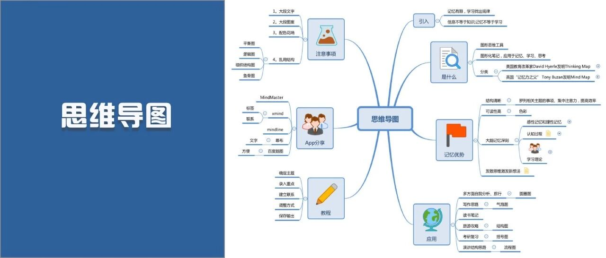

攻略|自从用了思维导图，我效率高高高高多了！

关注 秋秋很开心 🎵
努力做一个“治愈+宝藏”女孩

又是新的一天呀
这次要和大家分享一下思维导图。这篇文章也快准备3天了，除了对「高效学习」有帮助，希望这篇文章也能带给你更多。
你将得到
1.知道思维导图来源、分类
2.学会制做思维导图
3.解锁6个专业导图工具
4.获取专业思维导图大礼包
内容索引：
1.什么是思维导图
2.思维导图的优势🚩
3.思维导图的用法
4.入门思维导图教程
4.思维导图常见工具🔧
5.思维导图注意事项
也许看完这篇文章，你就是导图达人啦～那就开始吧！
1
什么是思维导图
思维导图其实大家都不陌生，就是图形化的思维工具，我们看到的各种框框圈圈横线程序图，都可以算作思维导图。
而它的来源有两个:
（1）英国“记忆力之父” Tony Buzan发明的Mind Map，特点是以一个主题为中心👇

（2）美国认知心理学David Hyerle发明的Thinking Map，有8种类型，那种奇怪的气泡图、鱼骨图、组织图都是👇


现在经常用的大都是上边那种——Mind Map，下边及接下来见到的其他的，是Thinking Map，用途更多。

2
为什么用思维导图
我自己的感觉是：思维导图能让知识更加条理。如果一张图就能概括一本书的内涵，那不是非常高效？
当然，它还有这些优势：
可读性高
在做的过程种我慢慢也发现，除了能个把知识梳理一遍，结构更加清晰，过程中我也会加很多图标。

而人的大脑对不同材料的识别中，图片要好于文字。所以不仅仅是结构清晰可读性强，颜色和图案也让思维导图更好理解与阅读。
方便记忆
从心理学「认知」的角度，可以解释思维导图为什么容易被记住。
认知：我们每天都接受信息、进行编码、最后储存再提取，这个过程就被称为认知过程。
而思维导图就是在信息编码的过程，好于其他方式。
因为在做思维导图的过程，我们就对知识进行了重新编码。
简单来说就是：它不再是书本的逻辑，变成了你自己的逻辑。所以被写进大脑的时候，更符合你的认知习惯，也就更加方便记忆。

这就是为什么，同样是学习，别的同学抄书十遍，都还是在抄作者的脑回路，而你做一遍思维导图，就能把它变成你自己的东西，更好识别和提取。
拓展思维
放射性思考是人类大脑的自然思考方式，而思维导图，也是由圈圈框框组成的。
当你以一个思考中心，不停向外发散，你的就会变得大脑活跃，思维也就发散了。
3
思维导图有哪些用法
前面说了很多理论，现在轻松的来了。
别以为只有记笔记才用思维导图，其实它的用法真的很多：
01
旅行—圆圈图

前面说过思维导图的创始有2种，Thinking Map有8种类型，圆圈图就是其中一种。
这种图比较适合你想一个主题随机的往里面填词，比如旅行清单、大一新生入学清单，都可以。
02
写作思路—气泡图

这种和圆圈图很像，但是除了同一主题，不同主题的也可以放进去，甚至旁边随机再画几个气泡，这种导图更适合思维发散。
03
考研笔记—括号图

我一直以为只有画出来框框的才是思维导图，但是其实这种也是。
为了方便考研背诵我写的字还比较多，但是这种括号图真的同时兼顾清晰与实用，特别适合考研党用。
04
事件分析—鱼骨图

这种图在接下来的APP模版里就有，不需要自己设计，但是对问题的梳理很有帮助。
05
组织架构—结构图
这种图应该班主任或者学人力资源的时候会用到，梳理书籍人脉关系图的时候其实也可以用。
除了以上的，还有很多思维导图和拓展资料，需要的小伙伴看末尾，后台回复即可领取～
4
怎么做思维导图
（理论篇）
说了那么多，大家应该蠢蠢欲动了，现在就教大家一个通用思维导图思路。以Xmind做示范：
1.确定主题

做思维导图最根本，就是要明确你这次做的内容是什么，读书笔记还是头脑风暴，两者区别很大。
2.选择板式

如果是鱼骨图、结构图，APP里就自带很多模版，所以一开始做不出好看的思维导图也不用担心。
3.填充内容

选择好板式，直接按照你的想法输入内容就可以💡
4.加入图标

所有的编辑按钮都在右面，图标是思维导图美观关键，可以让你的思维导图锦上添花📈。
5.保存导出

编辑完毕，点击上面的「文件」按钮，就可以保存成各种格式，图片、pdf都没问题，最重要的还可以打印出来！非常方便！

用我的打印机打印
5
怎么做思维导图
（实践篇）
前面的方法是每个导图都会用到，但每款工具使用上还是有区别的，这次以process on 实际操作一下/
具体教程搜索官网就有🔍：
1.注册创建

下载好你喜欢的工具，去注册账号即可。然后记得每次创建的时候都取好名称，养成良好习惯。
2.新建—选择模版

打开左边「新建」按钮，挑选一个你喜欢的样式进行创建。一般app上都会自带模版，喜欢的话也可以直接打开后修改。
3.插入文本（图片）

正常录入就可以。另外，我也是第一次发现process这么好用，因为可以自己插入图片。
4.调整连线

录入完内容可以做一下调整，思维导图的框框、连线、背景、形式都是可以更改的。记住，工具都是在上面🔧
5.调整框框

圆形矩形都看心情，里面要不要填充颜色也可以修改～
6.调整背景页面

我最喜欢网格的背景，但是看起来有点花。一个窍门：想要色调同一，直接吸色器吸取就可以。
7.各种修改


最后，如果你做的导图不是你最开始喜欢的样子，可以及时更改。变换板式、风格、方向都是可以的。
6
思维导图工具
教程还需要大家实操，下面介绍工具。我用过的有下面6种，大家可以根据自己的情况来选择：
NO.1

功能最多的

除了前面说的8种板式（鱼骨图之类的），这个工具还多出了S曲线图、扇形放射图等等，里面设计的也很好看，适合高端用户。
（现在很多模版都是会员付费的，所以我已弃坑）
NO.2

模版最好看的

我用的最多的。其实上文示例的图也大都是这个做的。它的优点是好看，也可以加不同的图标、还能加备注。


<< 滑动查看下一张图片 >>
所以就买了这个会员，一直用到现在。
NO.3

入门最简单的
大学的适合用的最多，就是简单的 mind map，但是里面的板式太少，简单用用还可以，推荐新手。
NO.4

手机端最好的
这款APP我之前推荐过，提高效率那篇文章里：

但是唯独这款，是我经常在手机端打开的，因为文字录入模式太强大！
一键转化思维导图，简直不要太省时间🙈
NO.5

最新发力的
这款就是 process on，我查了没有手机端，但是线上就可以用，里面也超级好看！
模版丰富：

自带教程：

可以说同时兼备方便和美观了，我自从打开之后，就沦陷了😭
NO.6

最简单方便的
百度大大出品的，但是我第一使用感受并不好，类似mind line +一点点miand master，不是特别好看。
但是好在打开网页就能用，不需要下载，也算节省时间。

最后，以上6款是我用过的，除了这些应该还有其他脑图工具，大家可以自由探索......
7
思维导图注意事项
以上，思维导图的大致内容就差不多了，但是还是要说一下新手经常犯的错误（我也是这么走过来的🙅）
一定认真看啊！
大段文字

图片文字还不是太多，有那种全部都是文字的，真的不推荐。
如果是为了考研复习需要大段文字，也建议是把框架先整理出来。
图案复杂

不管是手写还是电子版，都不要因为画图或者找插图占用太多的时间。
思维导图本身是为了帮我们更好记忆的，如果为了画图占用时间，有点得不偿失。
配色花哨

和前面两种问题类似，颜色可以促进记忆，但是太多的颜色过犹不及。
用错结构
这个其实最容易犯，所以为了区分几种结构图，我做了一张表。
大家可以好好感受一下，针对不同问题做不同的脑图，效果更好。
-END-

好的，这期到这里就结束了。这篇文章真的写了好久，如果觉得有帮助，就转发下吧 ～
另外！！！给大家准备了一点小福利☕️
思维导图常见快捷方式大全，还有创始人东尼·博赞的《思维导图—大脑使用说明》电子版。
以及其他两本超级赞的书，《我的第一本思维导图入门书》《思维导图应用宝典》，打开思路做笔记都很有帮助！

（一共三本）
领取方式：
1.星标公号：「秋秋很开心」

2.截图星标到后台

互动时间

Q＆A
问/答/时/间
你平时会用思维导图吗？
快在留言区留下你的想法吧
有帮助，就 “在看” 支持下